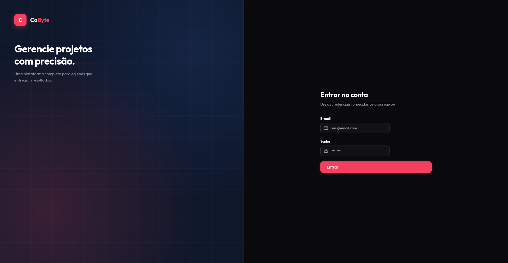
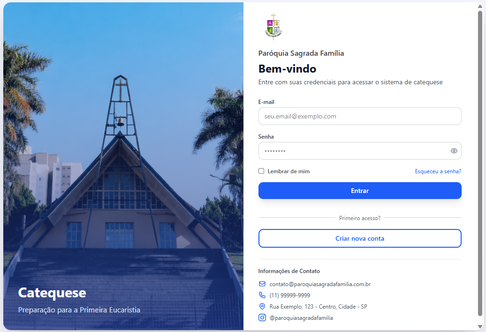

Projetos

Em Desenvolvimento
CoByte - Plataforma Colaborativa
Aplicação web voltada à automação e padronização do levantamento de requisitos de software.
HTMLCSSJavaScriptPythonFlaskMySQL

Concluído
Sistema de Gestão de Catequese
Aplicação web para organização de turmas, permitindo o cadastro e gerenciamento de alunos.
HTMLCSSJavaScriptPythonFlaskMySQL


Programação Robótica Industrial
Programação e simulação de robôs industriais utilizando Roboguide (FANUC).
LINKEDIN